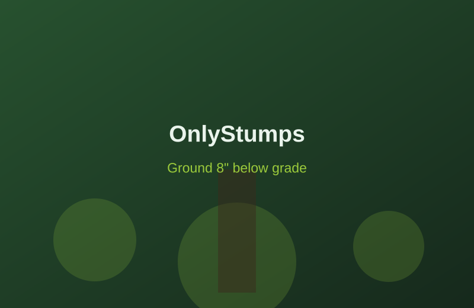
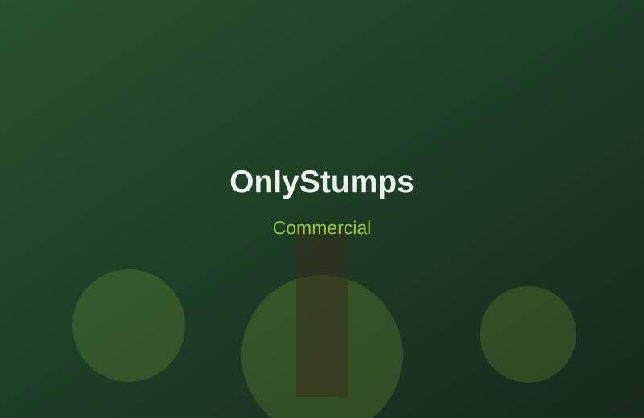
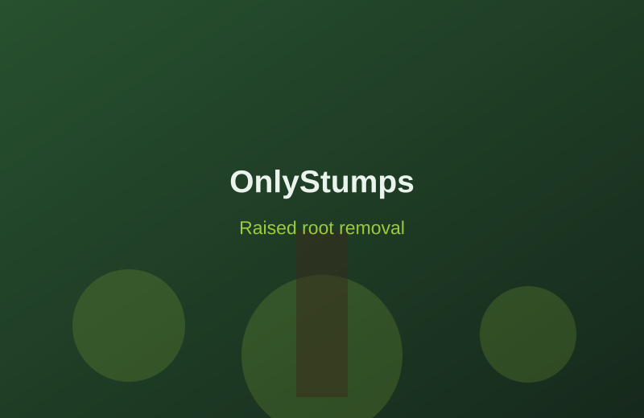
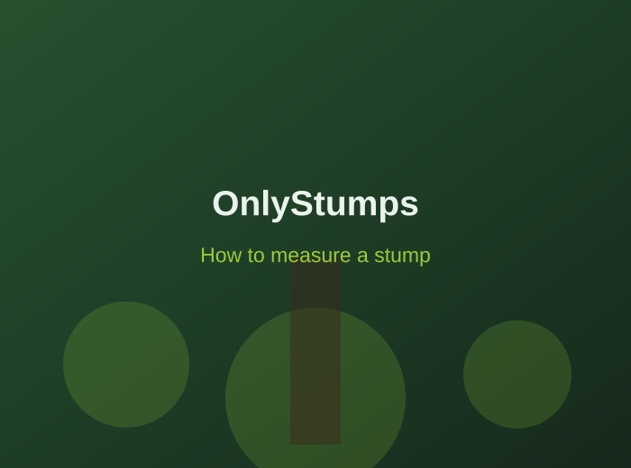

OnlyStumps grinds tree stumps down to at least 6 inches below grade, leaving room for new grass once the spot is filled in. Our equipment fits through a 36" gate in fenced yards, and we'll call Iowa One Call so every underground utility is marked before we start.
Curious about pricing? Use our stump removal cost calculator for a quick estimate to get started.

The process
Send us details on the number and size of stumps. Measure from the widest above-ground point, including any raised roots.
Once you've reviewed the quote, pick a time that works. Prefer an in-person look? We can visit and identify the stumps with you.
Our crew arrives with the right equipment and grinds the stumps and exposed roots to at least 6". Deeper grinding is available for a small add-on.
We leave the grindings in a tidy pile, or haul them away if you added cleanup — a smooth surface ready for whatever's next.
Service types
Reclaim your yard from unsightly stumps — one stubborn stump or a whole cluster. Clean, safe, and affordable for homeowners.
Residential stump removal →
Keep your property looking sharp with minimal disruption to your operations and a schedule that fits your business.
Commercial stump removal →Parks, roadsides and other public spaces removed safely and efficiently for towns across eastern Iowa.
Municipal stump removal →
Trip hazards and landscaping obstacles ground down with specialized equipment, leaving your property hazard-free.
Raised root removal →How to measure
Use the widest diameter above ground — including the root flare. Don't measure the narrow trunk base. That number is all we need to size up your estimate.
Calculate cost
Free estimate
Tell us how many stumps you have, where they are, and roughly how wide each one is. We'll follow up with a quote — usually the same day.
or fill out the form →